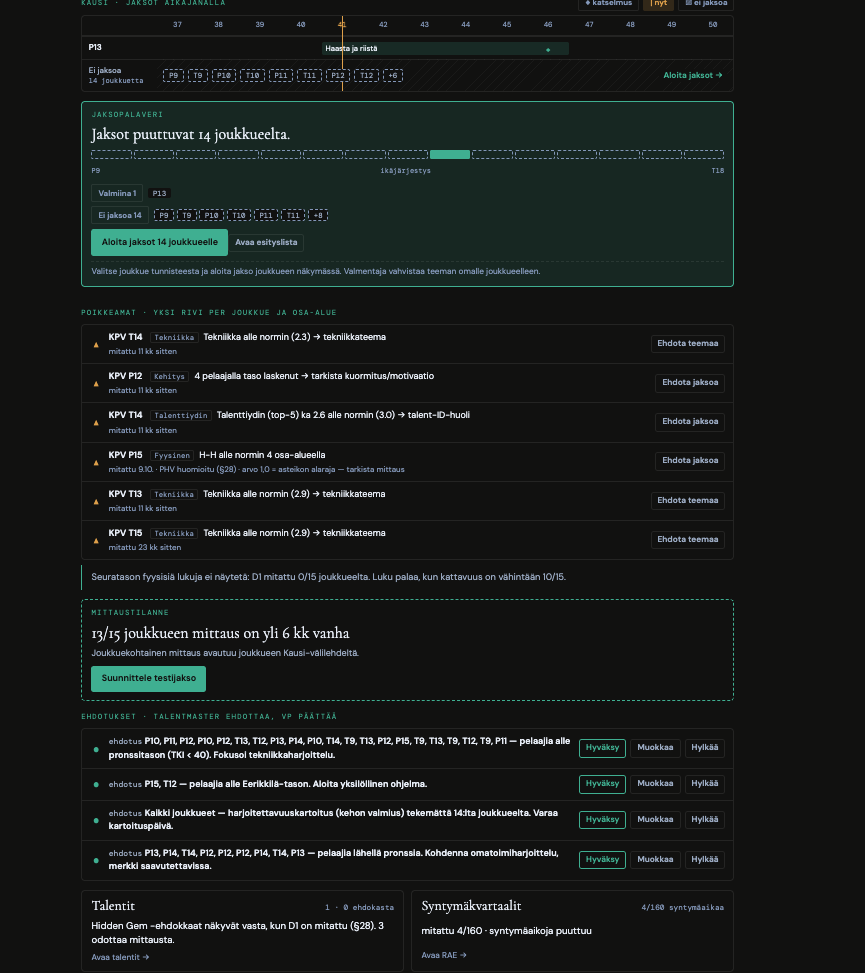

Tero 10.10.: "En tunnista tätä TalentMasteriksi." Nykyinen Tilanne käyttää viittä eri korttityyliä, 18 nappia yhdellä näytöllä ja järjestelmän sisäistä kieltä ("Tekniikka Tekniikka alle normin (2.3) → tekniikkateema"). Tämä mockup rakentaa saman sisällön vain mockupin 22 osista: kysymyskortit, yksi signaalikortti, rivilista ja .ev-kortti. Data on KPV:n kaltaista (15 joukkuetta, 1 jakso), ei tyhjää demoa. Ei pelaajanimiä.

.ev-anatomialla: otsikko, luku, lause, linkki.lib/-tiedoston ?v= nousee kaikissa sitä lataavissa HTML:issä (vartijatesti). (3) Tero hyväksyy KPV-näkymän ennen mergeä.